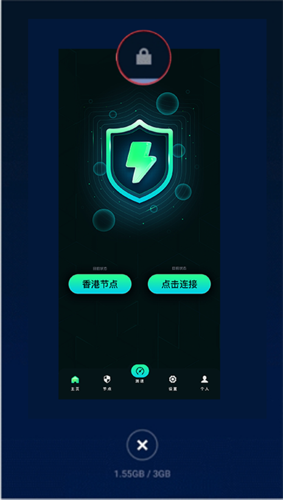
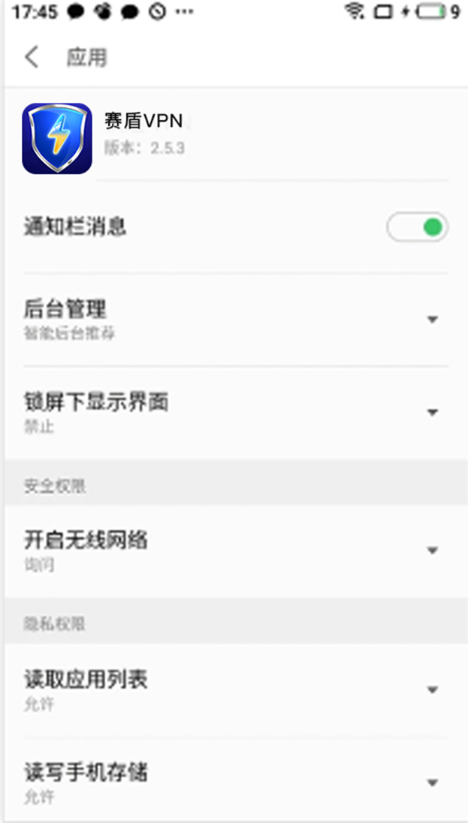
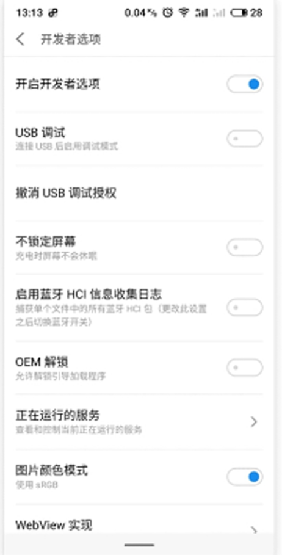
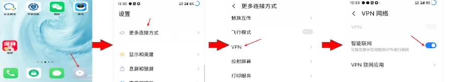

返回
欢迎查看常见问题
智慧服务，让您使用更简单

允许赛盾 VPN 在魅族手机后台运行
若您使用中经常 赛盾VPN 就不好用了，请您设定“允许后台运行”就可以稳定使用了
魅族手机中存在“杀后台”的现象，这样会导致赛盾VPN 在运行过程中被冻结了。您这时发现的现象是各种 App 和网络好像都无法访问了。
要解决这个问题很简单，您可以在您的“手机管家”中为 赛盾VPN 开放“允许后台运行”权限就可以解决这个问题。若还是不行，您可以在多任务管理界面中锁定 赛盾VPN。
若您是其他品牌的手机，请您参考《每隔几分钟就不好用了，赛盾 VPN 太不稳定了?》文章的说明。其中也介绍了为什么“杀后台”会影响您的使用。
下面会对于如何在 Flyme 系统中手机的设置中心设定 赛盾VPN 的“允许后台运行”权限设定进行说明。
锁定“赛盾 VPN”APP

上图的操作步骤是:
从您手机的左下或者右下向上滑动打开“多任务管理”界面
2.找到“赛盾 VPN”然后下拉一下界面
3.在顶部您看到的选项中，请点击“锁头”标记
4.然后您在“赛盾 VPN”的标题右边就会看到一个已经锁定的锁头标记，说明已经设置好了
允许后台运行

上面的操作步骤是：
1在您的手机设置当中进入“应用管理”分类
2.在“所有应用”的列表中找到“赛盾 VPN”
3.在“赛盾 VPN”的信息界面中进入“权限管理”栏目;
4.请点击“后台管理”项目，然后选择其中的“允许后台运行”选项，默认的“智能后台”会导致您 赛盾VPN 的使用断断续续，不能设定为这个
如果您使用的是 Flyme 官方的“手机管家”软件请根据以下方法设置:
点击【手机管家】→【权限管理】一>【后台管理】→【赛盾 VPN】选择允许后台运行
调整后台进程限制数量

部分魅族手机刷机后需要调整下后台进程限制数，来给咱们软件在后台运行再加一个保障，具体步骤
1.在您的手机设置当中进入“辅助功能”:
2.找到“开发者选项”然后选择“后台进程限制”
3.在弹出的弹窗中选择“不超过4个进程”即可
注:开发者模式需要进入手机设置一关于手机一多次点击版本号即可进入开发者模式
在加一步，让访问更加顺畅
请您打开手机设置】一【更多连接方式】一【VPN】，看一下【智能联网】后面的开关是否打开了。如果打开了一定要关闭这个功能。(下图为打开状态，应该关闭

注:若您在下载和使用过程中有任何问题，您随时可以发送邮件给 {{kfEmail}}，将由专业的客户服务人员帮助您获取到最新版本的软件。